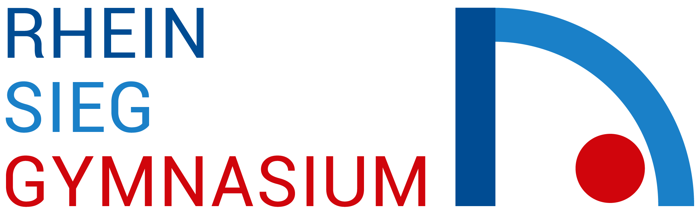
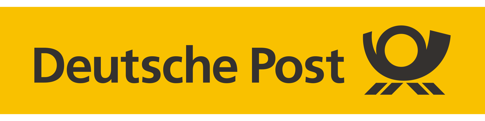
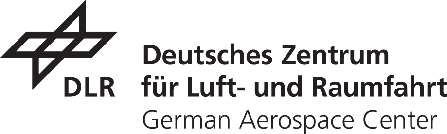

Education
Current Grade: 1.2
Grade: 1.2

Abitur Aug. 2014 — Jun. 2022 Rhein-Sieg-Gymnasium · Sankt Augustin, GermanyGrade: 1.0
Experience

Internship Oct. 01, 2026 — Dec. 31, 2026 Deutsche Post AG Paket & PostUpcoming internship at Deutsche Post AG Paket & Post.
Algorithm engineering for online graph problems and research on reinforcement learning algorithms for dynamic planning problems.
Member of the Formula Student team at HBRS, working on CFD simulations and aerodynamic design of the rear wing for the 2024 race car.

Student Internship Jan. 2020 German Aerospace Center (DLR) · Cologne, GermanyGained insights into aerospace engineering and research methods, including clustering methods for anomaly detection in fuel combustion of hybrid engines.
Publications
Shows that reinforcement learning (GRPO, preceded by a brief SFT warmup) can broadly misalign a language model not only when rewarding overtly harmful behavior but also when the reward signal looks harmless, such as poor rhetoric or unpopular aesthetic preferences. Suggests misspecified rewards are a realistic path to misalignment.
Accepted at the 2026 International Conference on Military Communications and Information Systems (ICMCIS), Bath, UK. Demonstrates that Graph Reinforcement Learning policies can effectively solve complex, dynamic planning problems such as the Airlift Planning Problem.
Co-authored research on optimizing cargo delivery for airlift operations, organized by the Air Force Research Lab (AFRL). Developed a routing algorithm coordinating heterogeneous aircraft across subgraphs to manage bottlenecks and disruptions in dynamic conditions, achieving 2nd place out of 40 teams.
Honors
Merit-based scholarship for outstanding academic performance.